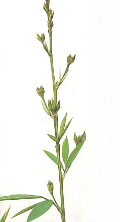

अरहरPigeon Pea
Cajanus cajan · Fabaceae · FLR-0055

- Scientific name
- Cajanus cajan (L.) Huth
- Family
- Fabaceae
- Hindi
- अरहर
- Status here
- cultivated
- IUCN
- not evaluated
When to look कब देखें
Expected mainly in January, February, June, July, August, September, October, November, December.
अरहर / Pigeon Pea
Cajanus cajan (L.) Huth — Fabaceae
अरहर (तुअर) — उत्तर प्रदेश की एक अत्यंत महत्वपूर्ण, खरीफ (वर्षाकालीन) दलहन फसल (pulse crop) है। यह एक सीधे बढ़ने वाला, झाड़ीनुमा बारहमासी या अर्ध-बारहमासी (semi-perennial) शाकीय पौधा है जो 1.5 से 3 मीटर तक ऊंचा होता है। इसके पत्तों में तीन पत्रक (trifoliate) होते हैं जो नीचे से हल्के रोएंदार होते हैं। सर्दियों की शुरुआत में (नवंबर-दिसंबर) इसमें पीले या लाल-पीले रंग के बड़े, मटर जैसे फूल आते हैं। इसके बाद इसमें लंबी, धारीदार फलियाँ (striped pods) लगती हैं जिनमें गोल, हल्के भूरे या क्रीम रंग के बीज होते हैं। अरहर की दाल उत्तर प्रदेश के हर घर में दैनिक भोजन (दाल-चावल) का मुख्य प्रोटीन स्रोत है। इसकी गहरी मूसला जड़ (taproot) मिट्टी को बांधती है और सूखा सहने में मदद करती है, जबकि जड़ों में मौजूद बैक्टीरिया नाइट्रोजन को मिट्टी में स्थिर कर उर्वरता बढ़ाते हैं। फसल कटने के बाद इसके सूखे, लकड़ी जैसे डंठल ग्रामीण क्षेत्रों में ईंधन का मुख्य साधन बनते हैं।
Quick Identification त्वरित पहचान
| Feature | Description |
|---|---|
| Form | Tall, woody, branched leguminous shrub (1.5–3 m tall) with a deep taproot and ribbed, hairy green stems |
| Leaves | Alternately arranged, trifoliate (3 leaflets); leaflets are oblong-lanceolate (5–10 cm long, 2–4 cm wide), velvety green above, pale silvery-green with fine hairs below |
| Flowers | Large (1.5–2 cm long), pea-like (papilionaceous), bright yellow or yellow with reddish-purple stripes on the back of the largest petal (standard) |
| Fruit | Linear-oblong, flat, hairy pod (5–9 cm long) marked with dark oblique lines or mottling between the seeds; ending in a sharp beak |
| Seeds | Round to oval (4–6 mm diameter), slightly compressed, light brown, tan, or cream-colored, with a small white scar (hilum) |
Field tip: A exceptionally tall, woody leguminous shrub growing in dry winter fields, producing yellow-red pea-like flowers and flat, dark-striped beaked pods, with greyish-velvety trifoliate leaves.
Morphology आकारिकी
Biometrics (typical measurements for long-duration cultivars in eastern UP):
| Feature | Measurement |
|---|---|
| Plant height | 1.5–3 m |
| Leaflet length | 5–10 cm |
| Leaflet width | 2–4 cm |
| Flower length | 15–20 mm |
| Pod length | 5–9 cm |
Leaves: The leaflets are pinnate-trifoliate, with the terminal leaflet being longer and wider than the two lateral ones. The lower leaf surface is covered in dense, microscopic hairs that reduce water loss.
Root architecture: Possesses a deep, robust taproot that can descend up to 2 meters, accessing deep water reserves. The roots carry large, irregularly shaped nodules housing Rhizobium bacteria.
Associated Species / Interactions सहजीवी संबंध
Leguminous host and structural nesting anchor.
- Rhizobial symbiosis: Form nodules with Bradyrhizobium species, adding significant amounts of nitrogen to the soil, benefiting rotation crops.
- Pollinator harbor: The large, showy yellow flowers are highly attractive to carpenter bees (Xylocopa spp.), megachilids, and honeybees during winter months.
- Micro-climate canopy: The tall, woody shrubs provide shade and shelter for ground-feeding birds like Grey Partridge and doves (
[BRD-0025 Laughing Dove]). - Insect hosts: Serves as a primary food source for pod flies, boring caterpillars, and sucking bugs.
Life Cycle / Phenology जीवन चक्र
- Sowing: Sown in June–July with the onset of monsoon rains. It is a slow-growing crop in its early stages.
- Vegetative growth: Grows actively during July–October, developing a woody, shrubby structure. It is highly drought-tolerant.
- Flowering: Profuse yellow-red flowers bloom in late autumn (November–December), filling the field with a yellow canopy.
- Fruiting: Striped green pods form in December, drying to a brown or straw-colored state by January–February.
- Harvest: Cut in January–February. The branches are threshed to release the seeds, and the dry stalks are bundled for household wood.
Pests and Diseases कीट और रोग
- Tur Pod Fly: The larvae of Melanagromyza obtusa bore into the pod walls and feed on the developing seeds, leaving no external entry holes but causing seed damage.
- Gram Pod Borer: Caterpillars of Helicoverpa armigera feed on flower buds and bore into green pods, leaving round exit holes.
- Fusarium Wilt: Soil-borne fungus Fusarium udum enters the roots, blocking water flow and causing sudden wilting and drying of the mature shrub.
Agricultural / Human Relevance कृषि प्रासंगिकता
UP's premier pulse and domestic wood crop.
- Dietary protein: Split and dehulled seeds form Arhar Dal (Pigeon Pea Dal), the most popular pulse in UP, eaten daily with rice or chapatis. It is a vital protein source in vegetarian diets.
- Domestic firewood: After threshing, the dry, woody stalks (rahar ka danda) are used by villagers as premium cooking fuel for traditional clay stoves (chulha). They are also used to weave temporary thatch roof frames, fences, and baskets.
- Livestock fodder: The green leaves and pod husks left after threshing are fed to dairy cattle and goats as a high-nutrition winter fodder.
- Basti cultivars: Common regional varieties include Bahar, UPAS-120, and Narendra Arhar series.
Traditional and Ethnobotanical Use
- Convalescent Dal Water (Dal ka Pani): Thin, lightly-salted Arhar dal broth is the primary recovery food given to sick patients, postpartum women, and infants across UP villages as a highly digestible, protein-rich tonic.
- Holi Bonfire Fuel: Dry pigeon pea stalks (rahar ke dande) are a traditional ceremonial fuel for the Holi bonfire in Basti villages, considered auspicious because they burn steadily with little smoke.
- Stalk Flute and Play: The straight, hollow, dried stems are cut into sections by children to make traditional simple flutes (bansuri) and blow-pipes, a common rural folk toy.
- Sacred Dal Offering: Arhar dal cooked with rice (dal-chawal) is the most common sacred food (prasad) offered at village shrines and choupal gatherings during Diwali and other festivals.
Cultivation Calendar
| Stage | Month(s) |
|---|---|
| Field preparation | May–June (ploughing and line marking) |
| Sowing | June–July (immediately after monsoon arrival) |
| Vegetative growth | July–October (intercropped often with maize or sorghum) |
| Flowering | November–December |
| Harvest | January–February |
Expected Locally स्थानीय रूप से अपेक्षित
Not a field record. Written from published accounts for eastern Uttar Pradesh. No confirmed local sighting yet — if you have seen it, that is what the atlas needs.
अभी तक स्थानीय पुष्टि नहीं। यह विवरण प्रकाशित स्रोतों से है, किसी अवलोकन से नहीं।
Widespread across Basti district, especially in upland fields that have good drainage. Observed commonly in Bahadurpur, Saltaua, and Harraiya blocks. During late autumn, the yellow flowering stands of Arhar are highly visible, and in February, bundles of dry woody stalks are stacked near village homes for use as fuel.
Distribution वितरण
Global range: Domesticated in India over 3,500 years ago. It is now cultivated throughout the tropical and subtropical regions of the world, particularly in South Asia, East Africa, and the Caribbean.
In India: India is the largest producer, with extensive cultivation in Maharashtra, Madhya Pradesh, Karnataka, Uttar Pradesh, and Gujarat.
In Uttar Pradesh: Cultivated in all plain districts during the Kharif-Rabi cycle.
In Basti district / eastern UP: Cultivated resident; the principal long-duration pulse.
Research Questions शोध प्रश्न
- How does the incidence of Fusarium udum (wilt) in Basti change when Arhar is intercropped with Sorghum compared to mono-cropped stands? / ज्वार के साथ अरहर की सह-फसली खेती करने पर उकठा रोग (wilt) के प्रकोप में एकल फसल की तुलना में क्या अंतर आता है?
- What is the contribution of dry Arhar stalks to the domestic fuel security of smallholder households in Basti district? / बस्ती जिले के सीमांत किसानों के घरेलू ईंधन सुरक्षा में सूखे अरहर के डंठलों का क्या योगदान है?
- Does the deep taproot system of Cajanus cajan improve water infiltration rates in compacted clay loam soils?
- Which wild pollinator species is the most effective in visiting and fertilizing Cajanus cajan flowers during November?
- Can children compare a fresh green Arhar pod with a dry brown one to record how the color, texture, and size changes? — A simple observation-based botany activity.
Similar Species मिलती-जुलती प्रजातियाँ
| Species | Key Difference | हिंदी |
|---|---|---|
Cicer arietinum (Chickpea [FLR-0056]) | Much shorter herb (under 50 cm); leaves are pinnately divided with many small leaflets; flowers are pink/white (not large yellow). | चना — छोटा पौधा, संकीर्ण विभाजित पत्तियां, गुलाबी/सफेद फूल |
| Cajanus scarabaeoides (Wild Ban-Arhar) | A trailing or creeping wild legume; stems are thin and climb on fences; pods are very small (1–2 cm) and covered in dense gold hairs. | बन-अरहर — बेलनुमा जंगली पौधा, छोटी सुनहरी रोएंदार फलियाँ |
| Sesbania sesban (Dhaincha) | Leaves are pinnately compound with 10–20 pairs of leaflets (no trifoliate structure); flowers are yellow with dark spots; pods are very long and thin. | ढैंचा — पंख जैसे संयुक्त पत्ते, अधिक लंबी पतली फलियाँ |
Taxonomy & Classification वर्गीकरण
Original description. Carl Linnaeus described the species as Cytisus cajan in 1753 in his seminal Species Plantarum (Vol. 2, p. 739). Ernst Huth transferred it to the genus Cajanus as Cajanus cajan in 1893 in the journal Helios (Vol. 11, p. 133). The genus name Cajanus is a Latinized form of the Malay word katjang, which means "legume/bean." The specific epithet cajan is a tautonym repeating the genus name.
Subspecies. Monotypic as a wild ancestor, but represented by distinct duration groups: bicolor (long-duration, common in UP) and flavus (short-duration).
Family and order placement. Placed in the order Fabales, family Fabaceae, subfamily Faboideae, tribe Phaseoleae.
Phylogenetic notes. Cajanus is a genus of approximately 30 species, with its wild ancestor identified as the Indian legume Cajanus cajanifolius, proving its origin in western/central India.
IUCN status rationale. Not evaluated (NE) by the IUCN Red List. As a major, globally cultivated economic pulse crop, it faces no conservation threats.
Photo Gallery फोटो गैलरी
References संदर्भ
- Huth, E. (1893). Clavis in
Helios: Cajanus cajan. Helios, 11, 133. [original description] - ICAR-Indian Institute of Pulses Research (IIPR). Integrated Pest Management for Pigeonpea in Northern India. IIPR Extension Bulletin, Kanpur.
- Indian Council of Agricultural Research (2021). Handbook of Legume Crops. ICAR, New Delhi.
- Brandis, D. (1906). Indian Trees. Archibald Constable & Co., London.
- Botanical Survey of India. State Flora Series: Flora of Uttar Pradesh. BSI, Kolkata.
- GBIF Occurrence Data — Cajanus cajan (2026). GBIF taxon key: 7587087.
Source file: species/flora/crops/pigeon_pea.md